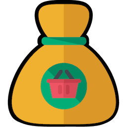

<div class="scrollable">
  <div class="ui clearing segment punti">
    <div class="ui centered circular inverted green segment" style="width: 50vw; left:calc(25vw - 14px)">
      <div ng-if="punti" style="font-size:4em;line-height: 1em;color: white;">{{punti}}</div>
      <div style="font-size: 1em">punti</div>
    </div>
    <div class="ui basic segment">
      <div class="h3" ng-if="!punti">
        Ancora nessun punto raccolto!<br>
        Se hai caricato degli scontrini da poco attendi, potrebbero essere necessarie 24-48 ore perchè vengano correttamente riconosciuti.
      </div>
    </div>
    <div class="ui basic segment"><small class="ha_punti"><span class="scontriniDaAnalizzare" ng-if="scontriniDaAnalizzare == 0">Attualmente non ci sono scontrini da analizzare.<br/></span><span class="scontriniDaAnalizzare" ng-if="scontriniDaAnalizzare == 1">Attualmente c'è uno scontrino da analizzare.<br/></span><span class="scontriniDaAnalizzare" ng-if="scontriniDaAnalizzare &gt; 1">Attualmente ci sono {{scontriniDaAnalizzare}} scontrino da analizzare.<br/></span><span class="scontrini_caricati" ng-if="scontrini_caricati == 0">Al momento nessuno scontrino è stato accreditato. Potrebbero essere necessarie 24-48 ore perchè i tuoi punti siano riconosciuti.<br/></span><span class="scontrini_caricati" ng-if="scontrini_caricati == 1">Finora è stato caricato uno scontrino valido.<br/></span><span class="scontrini_caricati" ng-if="scontrini_caricati &gt; 1">Finora sono stati caricati {{scontrini_caricati}} scontrini validi.<br/></span></small></div>
    <div class="basic segment" ng-if="loading==true">
      <div class="ui active centered inline loader"></div>
    </div>
    <h4 ng-if="scontrini">Scontrini caricati:</h4>
    <table class="ui table">
      <tr ng-if="!scontrini">
        <td colspan="2">Nessuno scontrino presente al momento.</td>
      </tr>
      <tr ng-repeat="scontrino in scontrini">
        <td>{{scontrino.descrizione}}</td>
        <td>
          <div class="ui horizontal label" ng-class="scontrino.colore">{{scontrino.stato}}</div>
        </td>
      </tr>
    </table>
  </div>
</div>